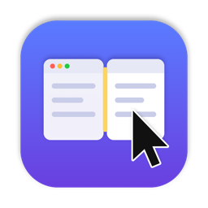

MacTweaks
Small macOS tweaks in one menu bar app. Turn each one on and off on its own.
Download for MacmacOS 15 or later · Apple silicon and Intel
Window Grip
Hold a modifier and drag anywhere in a window to move it, or drag with the right button to resize it from the nearest edge.
Cursor Jump
Keyboard shortcuts that send the cursor to the next display, or straight to a given one, right where it last was.
Tile Link
Windows side by side stay side by side: drag their shared edge and the neighbours resize with it.
Mouse & Trackpad
Middle click with three fingers on the trackpad or two on the Magic Mouse, and middle-click paste of the selected text.
No keyboard monitoring and no data collection. The only network request is the update check.